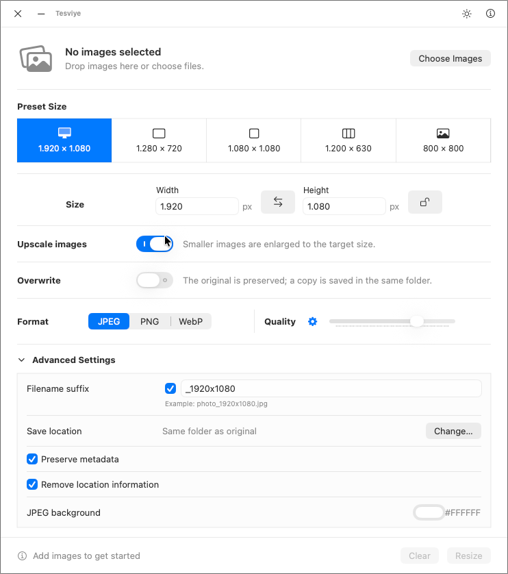
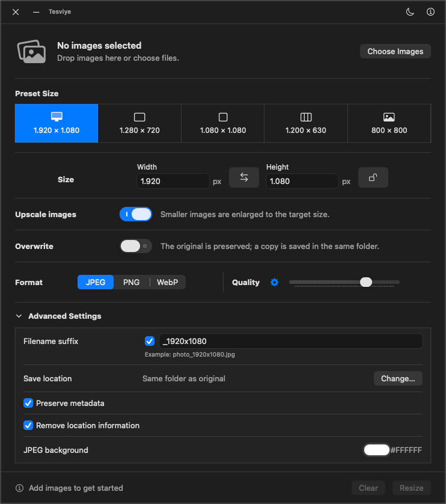

Toplu işlem
Birden çok görsel seçin, listeyi bir kez kontrol edin ve tamamını tek işlemde boyutlandırın.
macOS görsel boyutlandırıcı
Tesviye, tekrar eden görsel boyutlandırma işini tek ve odaklı bir adıma dönüştürür. Tek bir görselle veya toplu dosyalarla çalışın, çıktıyı belirleyin ve tüm işlemi Mac'inizde tamamlayın.


Tek pencerelik iş akışı
Boyutu, formatı, kaliteyi, kayıt konumunu ve dosya adını kapsamlı bir görsel düzenleyici açmadan belirleyin.
Birden çok görsel seçin, listeyi bir kez kontrol edin ve tamamını tek işlemde boyutlandırın.
Finder'da seçtiğiniz görsellerle Tesviye'yi açın; tüm dosyalar tek pencerede listeye eklensin.
Boyutu koruyun, hazır HD/kare/sosyal medya ölçülerini seçin veya Özel Boyut ile kesin değerler girin.
Orijinalleri koruyun, farklı klasör seçin ve numaralı adlarla dosya çakışmalarını önleyin.
Son boyut, format, kalite modu, tema, son ek ve kayıt konumu yeniden açılışta geri gelir.
Tek simgeyle açık ve koyu tema arasında geçin. Seçiminiz otomatik olarak kaydedilir.
Üç adımlı iş akışı
Dosyaları seçin, çıktıyı bir kez ayarlayın ve proje oluşturmadan veya yükleme yapmadan her sonucu inceleyin.
Dosyaları Tesviye içinden seçin veya Finder'da seçili görseller hazır yüklüyken uygulamayı başlatın.
Boyutu koruyun veya yeni ölçüler girin; ardından formatı, kaliteyi, isteğe bağlı son eki ve kayıt konumunu seçin.
İşlem özetini inceleyin, çıktıları Finder’da gösterin veya seçili görsel listesini temizleyin.
Çıktı denetimi
Boyutları değiştirmeden format dönüştürün veya iki işlemi birlikte yapın. Otomatik kalite çıktı boyutunu dengeler; manuel denetim tek tıklama uzağınızdadır.
Ayarlanabilir kalite ve şeffaf kaynak görseller için seçilebilir arka plan rengi.
Grafikler, arayüz varlıkları ve şeffaflığı korunması gereken görseller için kayıpsız çıktı.
libwebp destekli, otomatik veya manuel kalite seçimine sahip kompakt ve modern çıktı.
macOS için geliştirildi
Tesviye ayarlarınızı hatırlar, sistem kaynaklarını yalnızca işlem sırasında kullanır ve kapattığınızda tamamen sonlanır.
Görsel işleme yerel olarak gerçekleşir. Tesviye'de hesap sistemi, analiz SDK'sı veya yükleme servisi yoktur.
Uygulama yalnızca istendiğinde işlem yapar, çıkışta tercihleri kaydeder ve arka planda çalışmayı sürdürmez.
Kaynak kod GPL-2.0 ile sunulur; libwebp bilgileri deponun üçüncü taraf bildirimlerinde yer alır.